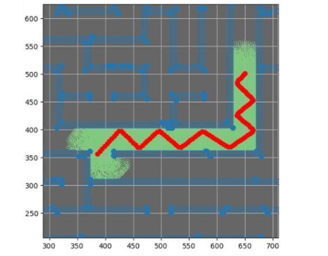

Slam Framework
Working on SLAM aspects from scratch.


The goal of this project was to create a 2D simulation environment and demonstrate autonomous navigation within an unfamiliar environment.
I created a Python tool to convert any 2D black-and-white image into a maze environment, and simulated 10 LiDAR sensors with 36 degrees of separation around the robot. I simulated the path of each beam and assembled a "known" map using LiDAR impacts, applying Gaussian distributions to represent the certainty that a wall existed within each square of the occupancy grid.
To navigate the maze, I developed a method based on physics simulation concepts, treating unexplored areas as attractors and walls as repulsors, while also modelling the robot’s previous path as a weaker repulsor. This encouraged exploration of new areas, and when the robot became trapped, the accumulated force from the previous path enabled it to escape.
This approach worked reliably across a wide range of maze environments, especially after tuning the relative strength and order of the attractive and repulsive forces.
As a secondary part of the project, I aimed to estimate attitude changes using real LiDAR data.
I converted the data into a point cloud and applied the Iterative Closest Point (ICP) method to estimate the rotation matrix between initial and final 2D scans. To avoid convergence locality, I implemented grid sampling over rotation matrices to identify the angle with the highest convergence (i.e. the angle to which the most points aligned).
This method achieved accuracy within two degrees in testing, with improved performance when more environmental features were present. It successfully estimated rotations of approximately ±90 degrees using only LiDAR point cloud data, without relying on gyroscopes or accelerometers.